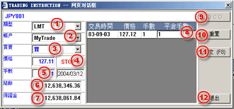

設置Limit/Stop指令
請跟隨下列步驟完成Limit/Stop指令設置：
| 1 | 類型 - 選擇LMT進行Limit / Stop指令設置。 |
 Limit
Order processing dialog |
| 2 | 帳戶 - 選擇交易帳戶。 | |
| 3 | 買/賣 - 選擇買/賣指令類型。 | |
| 4 | 價格 - 輸入觸發交易的價格。 | |
| 5 | 手數 - 輸入交易指令數量。 | |
| 6 | 結餘 - 所選擇交易帳戶的結餘。 | |
| 7 | 保證金 - 所選擇帳戶的有效保證金。 | |
| 8 | 平倉手數 - 輸入即將平倉指令的數量。 | |
| 9 | OCO - 通過此按鈕進入設置OCO指令窗口。 | |
| 10 | 重置 - 清除所輸入的平倉數量。 | |
| 11 | 提交(F8) - 提交指令操作。 | |
| 12 | 退出 - 退出當前對話框。 |
用戶在最後提交指令操作前必須確保填寫的正確性,應仔細對校驗對話框進行核對。
當指令提交成功後將以未確認 狀態顯示於 工作列表面板中，如果指令順利成交則以 已確認 狀態顯示，如若出現異常而未能成交則顯示爲 已取消 狀態。
指令被取消原因：
爲遵循交易規則在 未確認 狀態時用戶可能需要取消Limit/Stop指令；查看怎樣取消未成交指令.